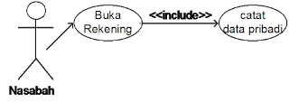
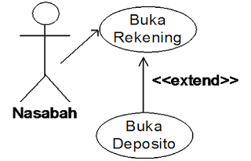
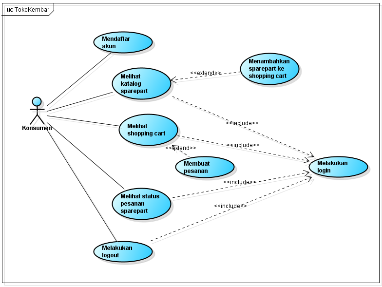
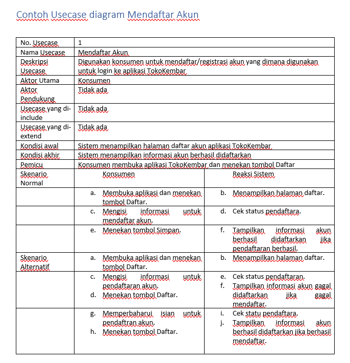

NIM : 1811500042
Nama : Arie Saputra
Kelompok: TI6A
Hasil saya menyadur di pertemuan 4 :
Pada pertemuan ke-4 membahas tentang Usecase diagram dan deskripsi usecase.Use-case diagram ialah untuk menggambarkan hubungan/interaksi yang bisa dilakukan oleh aktor dengan suatu sistem.
aktor tersebut ialah orang yang menggunakan sistem tersebut, atau sering disebut dengan user/pengguna. aktor terbagi menjadi 2 bagian, yaitu aktor aktif dan pasif. aktor aktif disebelah kiri, yaitu digambarkan dengan garis tanda panah menuju kasus pengguna. kalau aktor pasif disebelah kanan, yaitu digambarkan dengan garis panah menuju aktor.
usecase diagram tidak menjelaskan secara detail tentang penggunaan usecase, tetapi memberikan gambaran singkat hubungan antara usecase, aktor dan sistem. pada usecase diagram terdapat relasi include dan extend. include(disertakan) ialah suatu usecase lain membutuhkan usecase ini untuk syarat dapat dijalankan, arah panah include mengarah pada usecase yang dibutuhkan, dan 1 usecase bagida dari usecase lainnya.
extend(pengembangan) ialah suatu usecase yang dapat berdiri sendiri meski tanpa usecase yang lain, arah panah exclude mengarah pada usecase yang menjadi induk.
Contoh Include dan Extend :  
Contoh Tampilan Usecase TokoKembar : 
Contoh tampilan untuk Deskripsi usecase diagram Mendaftar akun : 
File ActivityDiagram TokoKembar dapat didownload dibawah ini Download File Latihan